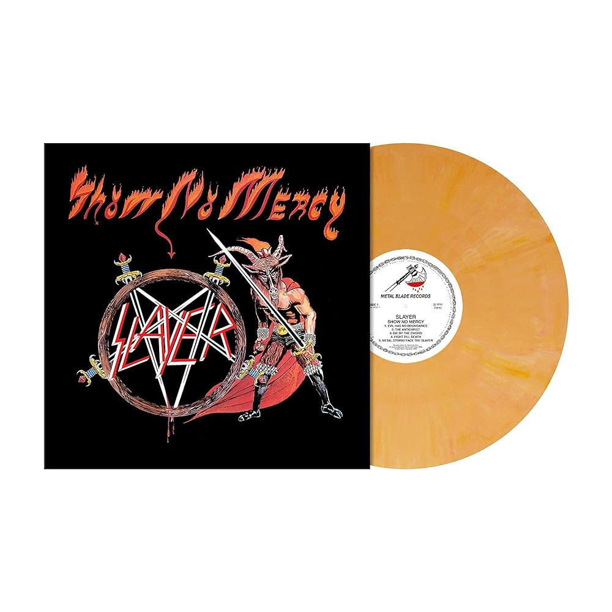

Show No Mercy é o álbum de estreia da banda norte-americana de thrash metal Slayer, foi lançado em 3 dezembro de 1983 pela Metal Blade Records.
Brian Slagel contratou o Slayer para a Metal Blade depois de os ter visto a tocar a canção "Phantom of the Opera", um original de Iron Maiden.
Por R$80,00
ou
10x de R$8,00